Golforg — Guida per l'utente
Organizza tornei di golf dal tuo iPhone o iPad: giocatori, campi, sorteggio, schede, scansione e classifiche, tutto sul tuo dispositivo.
Guida di Golforg 1.2 · iPhone, iPad e Mac (iOS 17 o successivo) e Android (11 o successivo)
1 Che cos'è Golforg?
Golforg aiuta un organizzatore a gestire tornei di golf di uno o più giorni. Inserisci giocatori e campi, definisci il programma, sorteggi i gruppi, stampi le scorecard e poi inserisci i punteggi — con i pulsanti, oppure scansionando le schede compilate a matita. Le classifiche si aggiornano da sole e si possono esportare in PDF.
Tutto resta sul tuo dispositivo (iPhone, iPad o Mac). Non c'è account, né server, né connessione internet sul campo. Il rovescio della medaglia: sei tu il responsabile dei tuoi backup (vedi «Backup e ripristino»).
I giocatori o i segnapunti possono anche inserire i punteggi del loro gruppo sul proprio telefono con l'app complementare Golfscore: scansiona il codice QR della scheda e mostra un codice QR dei risultati che importi in Golforg (vedi «Golfscore: punteggi inseriti dai giocatori»).
- Stroke play: classifiche lorda e netta, più una classifica dei putt.
- Stableford: punti per buca, netti e lordi.
- Shamble e Scramble: formule a squadre, classificate per gruppo e per giorno, con una classifica generale.
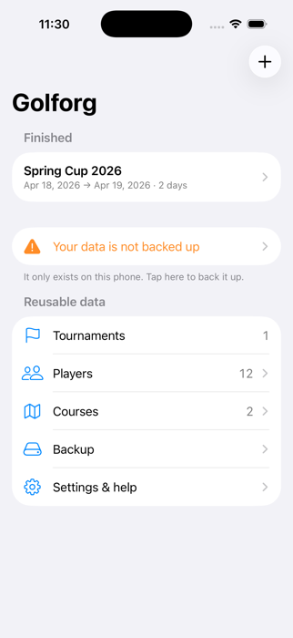
2 Per iniziare
- Aggiungi i tuoi giocatori (Home → Giocatori).
- Aggiungi i tuoi campi con par e indici (Home → Campi).
- Crea un torneo con il pulsante +.
- Iscrivi i giocatori e definisci il programma: un campo e una formula per ogni giorno.
- Sorteggia i gruppi e stampa le scorecard.
- Inserisci i punteggi con i pulsanti, oppure scansiona le schede.
- Consulta le classifiche ed esportale in PDF.
- Fai il backup dei tuoi dati (Home → Backup).
3 Giocatori
Home → Giocatori → +. Un giocatore ha nome, cognome e un handicap da 0 a 54 (decimali ammessi). I nomi appaiono come «Nome COGNOME».
Per inserire molti giocatori in una volta, usa Importa un elenco: una riga per giocatore, Nome COGNOME ; handicap, per esempio Mario ROSSI ; 13 oppure Mario ; Rossi ; 13. Un giocatore già presente (stesso nome) riceve solo il nuovo handicap.
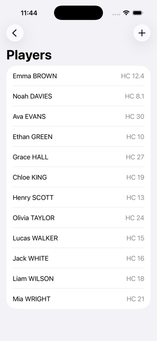
4 Campi
Home → Campi → +. Dai un nome al campo (e un paese, se vuoi), poi imposta per ciascuna delle 18 buche il par (da 3 a 5) e l'indice (da 1 a 18, ciascuno una sola volta).
5 Creare un torneo
Home → +. Inserisci un nome e il numero di giorni (da 1 a 14). Puoi indicare il primo giorno: i giorni saranno consecutivi. Una pausa si può aggiungere in seguito.
La scheda del torneo riunisce tutto: Giocatori, Programma (giorni, campi, date), Regole del torneo, Sorteggia i gruppi, Inserisci i risultati, le Classifiche e l'esportazione in PDF. In fondo, «Cancella tutti i punteggi» (utile dopo una prova) ed «Elimina questo torneo» chiedono di ricopiare un codice.
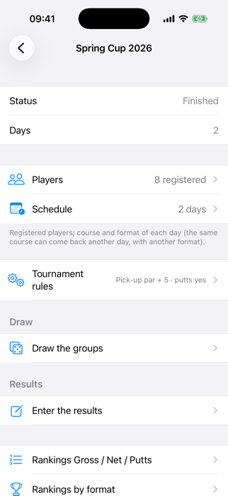
6 Giocatori e programma
Giocatori: spunta chi partecipa. Programma: per ogni giorno aggiungi un campo e una formula (Stroke play, Stableford, Shamble o Scramble). Lo stesso campo può tornare un altro giorno con un'altra formula.
- Modifica questo giorno… (pulsante su ogni giorno) riunisce ciò che si può fare con un giorno: sostituirne il campo, aggiungere un campo o una pausa, cambiarne la data, inserire una pausa prima, o far giocare di nuovo a golf un giorno di riposo.
- Annulla questo giorno (riposo): maltempo? Il giorno di golf diventa un giorno di riposo e il suo sorteggio viene eliminato. Impossibile quando esistono già punteggi.
- Scambia con un altro giorno…: scambia due giorni (golf o riposo) con i loro gruppi: il sorteggio segue il giorno. Le date restano al loro posto. Impossibile quando esistono già punteggi.
- Sostituisci il campo di un giorno…: i gruppi, i giocatori e la formula restano, cambia solo il campo. Utile per un campo da 27 buche di cui i due giri da 9 buche si conoscono all'ultimo momento: crea un campo da 18 buche per ogni combinazione, programma la più probabile e cambia il giorno stesso. Le schede già stampate di quel giorno vanno ristampate.
- Modifica la data… sposta un giorno; con «Sposta anche i giorni successivi», il resto del soggiorno segue. Inserisci una pausa prima di questo giorno aggiunge un giorno al soggiorno.
- Avanzate: programmare lo stesso campo su più giorni in una volta, o scambiare solo i campi di due giorni (i gruppi restano sul loro giorno).
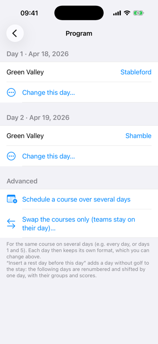
7 Regole del torneo
- Palla raccolta: un giocatore che raccoglie la palla segna par + N sulla buca in lordo e netto (5 per impostazione predefinita), 0 punti in Stableford. Nelle formule a squadre (shamble, scramble) un punteggio raccolto conta solo se gli altri non ne hanno.
- Conteggiare i putt: attivo, l'inserimento di una buca chiede i colpi e i putt, e la classifica dei putt è disponibile. Disattivo, vengono chiesti solo i colpi.
8 Formule e calcolo dei punteggi
- Netto = colpi meno i colpi ricevuti. Un giocatore riceve il proprio handicap (arrotondato) distribuito sulle buche: un handicap di 20 dà 1 colpo su ogni buca più un secondo sulle 2 buche con gli indici più bassi (1 e 2).
- Stableford (rispetto al par, netto o lordo): par 2 punti, bogey 1, doppio bogey o peggio 0, birdie 3, eagle 4, albatross 5. Una palla raccolta vale 0.
- Shamble: su ogni buca conta il miglior netto del gruppo. Scramble: conta il miglior lordo del gruppo. Le classifiche sono per gruppo e per giorno, e generali per giocatore.
- Posizioni: i totali uguali condividono la posizione (1, 1, 3). Un totale parziale (non tutte le buche giocate) è confrontabile solo a parità di buche.
9 Sorteggio dei gruppi
Torneo → Sorteggia i gruppi. Scegli i giorni (o tutti insieme) e il numero di giocatori per gruppo (da 2 a 6), poi Proponi un sorteggio. Un giorno senza campo nel programma viene saltato (l'app lo segnala). La sezione Verifica elenca i vincoli non rispettati. Tocca un giocatore, poi un altro dello stesso giorno, per scambiarli. Se serve, scegli un campo per ogni giorno, poi Convalida e crea i gruppi.
I vincoli del sorteggio guidano il sorteggio: non rigiocare con gli stessi compagni, bilanciare gli handicap, separare o riunire dei giocatori, fissare un giocatore in un gruppo, segnare un giocatore come non disponibile. Ognuno è rigido o una preferenza con un peso da 1 a 10.
Rifare o annullare un sorteggio esistente: l'app mostra un numero da copiare (valido 5 minuti). Non è possibile quando ci sono già punteggi: cancellali prima.
Sorteggio parziale (giocatori assenti): un giocatore si ritira all'ultimo momento? Scegli il giorno, spunta gli assenti, poi mantieni gli altri gruppi (si rifanno solo i gruppi che perdono giocatori; gli altri gruppi e le loro schede non cambiano) oppure rifai tutto il giorno. Non cambia nulla finché non convalidi.
Gruppi e schede vuote: sotto il sorteggio vedi i gruppi di ogni giorno con giocatori e handicap. Il pulsante QR di un gruppo mostra la sua scheda sullo schermo (per Golfscore, senza stampare); Schede di questo giorno (PDF) stampa le schede; Nuovo gruppo crea un gruppo a mano; scorri un gruppo verso sinistra per eliminarlo (con i suoi punteggi).
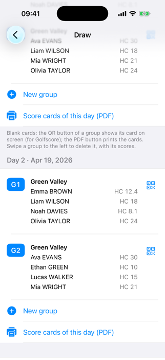
10 Scorecard e inserimento dei punteggi
Nella schermata del sorteggio, Scorecard da stampare (PDF) produce una pagina A4 orizzontale per gruppo, con il campo, i giocatori e un codice QR. Stampa al 100 % (non «adatta alla pagina») e lascia liberi i 4 quadrati neri negli angoli.
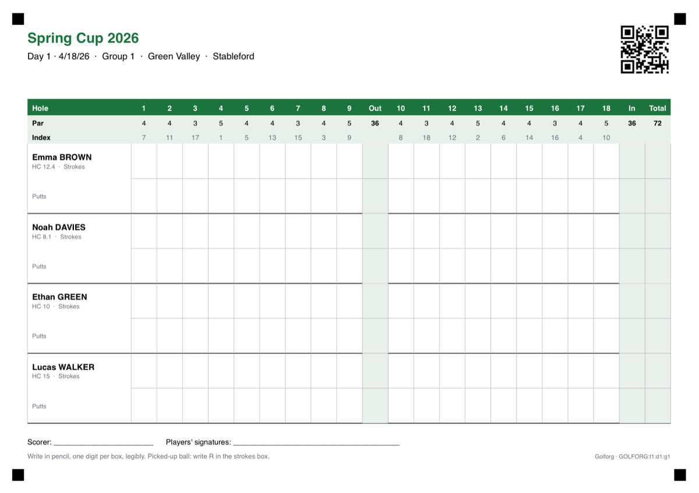
I giocatori compilano la scheda a matita, una cifra per casella, in modo leggibile. Per una palla raccolta scrivi R nella casella dei colpi.
Inserisci i risultati: Torneo → Inserisci i risultati elenca i gruppi di ogni giorno. Il badge di un gruppo indica a che punto è: verde = scheda completa, arancione = incompleta, blu = nulla di inserito. Tocca un gruppo: le buche sono in alto; usa − e + per colpi e putt, attiva «Raccolta» se serve, poi Salva la buca. La riga salvata mostra il netto e i punti Stableford. Puoi cancellare una buca per il gruppo, o scorrere un giocatore per cancellarne il punteggio.
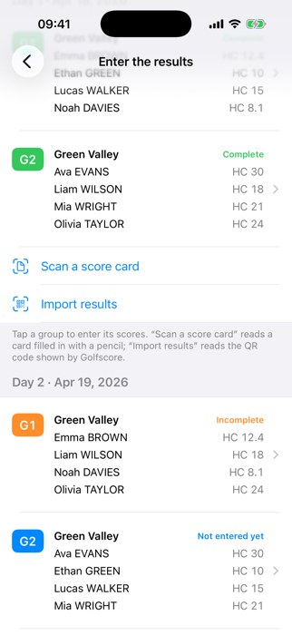
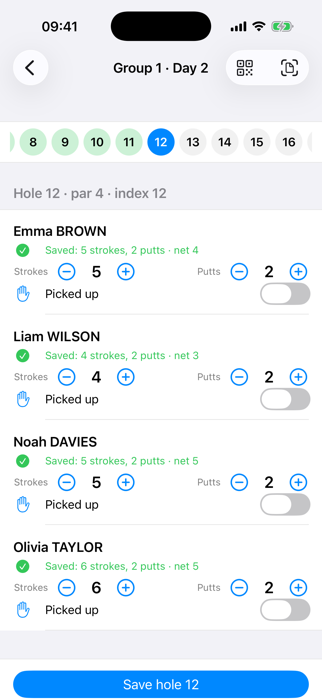
Con la scansione: Inserisci i risultati → Scansiona una scheda (o il pulsante di scansione in un gruppo). Fotografa la pagina intera, piatta e ben illuminata, con il codice QR e i 4 quadrati neri visibili. L'app legge le cifre sul dispositivo. Le caselle di cui non è sicura appaiono in arancione o rosso: correggile (puoi mostrare solo le buche da verificare), poi Salva i punteggi.
Con l'importazione dei risultati: Inserisci i risultati → Importa risultati. Il segnapunti mostra il codice QR dei risultati di Golfscore; scansionalo con la fotocamera (o scegli una foto). L'app verifica che appartenga al torneo, giorno e gruppo giusti, poi mostra la stessa schermata di controllo: nulla viene salvato prima della tua convalida.
11 Golfscore: punteggi inseriti dai giocatori
Golfscore è un'app complementare gratuita per i giocatori di un gruppo: uno di loro (il segnapunti) scansiona il codice QR della scheda (stampata, o mostrata da Golforg con il pulsante QR del gruppo), inserisce colpi e putt buca per buca, poi mostra un codice QR dei risultati che importi in Golforg. Nessun account, nessuna rete: tutto passa dai codici QR.
Golfscore mostra anche il conteggio in diretta della formula del giorno e può produrre un PDF del foglio compilato. La sua guida: Guida di Golfscore.
12 Classifiche e PDF
Le classifiche Lordo / Netto / Putt sommano tutti i giorni. Le classifiche per formula (Stableford, shamble, scramble) possono essere limitate a certi campi, giorni o formule; usa Genera dalle formule per creare quelle abituali, o + per crearne di tue (anche con un punteggio Stableford personalizzato).
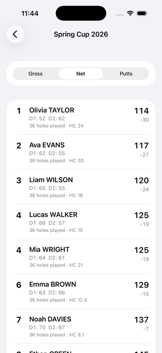
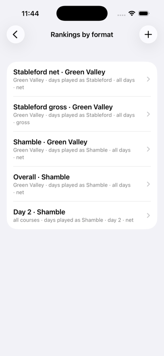
Esporta in PDF: spunta le classifiche volute, genera il PDF e condividilo (mail, messaggi, AirPrint…).
13 Backup e ripristino
I tuoi dati esistono solo su questo telefono. Fai backup con regolarità: Home → Backup → Salva ora, poi scegli dove salvare il file nell'app File (meglio iCloud Drive). Se non fai un backup da una settimana, compare un promemoria nella schermata iniziale.
Per ripristinare (nuovo telefono o dopo un problema): Backup → Ripristina un backup… e scegli il file. L'app mostra cosa contiene e sostituisce tutti i dati del telefono; lo stato precedente viene conservato a parte una volta, per sicurezza.
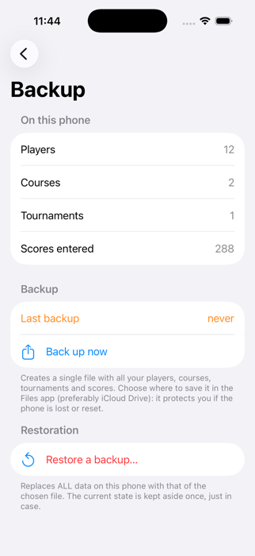
14 Lingua, supporto e privacy
Home → Impostazioni e aiuto: scegli la lingua (inglese, francese, tedesco, spagnolo, italiano, portoghese, cinese semplificato, russo; per impostazione predefinita quella del telefono), contatta il supporto (la mail contiene dettagli tecnici ma mai nomi), consulta il registro diagnostico, apri questa guida o l'informativa sulla privacy.
Golforg non raccoglie alcun dato. Leggi l'informativa sulla privacy.
15 Risoluzione dei problemi
| Problema | Causa probabile | Cosa fare |
|---|---|---|
| Lo scanner non trova il codice QR o i quadrati degli angoli | La pagina non è tutta nella foto, oppure è sfocata o scura | Fotografa la pagina intera, piana, con buona luce, angoli compresi |
| Alcune cifre sono lette male | Matita troppo chiara o scrittura poco chiara | Correggi le caselle arancioni/rosse nella verifica; la prossima volta scrivi più scuro, una cifra per casella |
| «Questa scheda appartiene a un altro torneo / giorno / gruppo» | Foglio sbagliato, o scansione dal giorno sbagliato | Apri il giorno e il gruppo giusti, oppure prendi la scheda giusta |
| Non posso rifare o annullare il sorteggio | Ci sono già dei punteggi | Cancella prima i punteggi (una buca, o «Cancella tutti i punteggi») |
| Una formula non ha classifica | La classifica non è ancora stata creata | Classifiche per formula → Genera dalle formule |
| I miei dati sono spariti (nuovo telefono, reinstallazione) | I dati vivono solo sul telefono | Backup → Ripristina un backup… con il tuo ultimo file |
| Mi chiede i putt ma io non li conto | «Conteggiare i putt» è attivo | Regole del torneo → disattiva Conteggiare i putt |
| Un giorno non ha gruppi dopo il sorteggio | Il giorno non ha un campo nel programma ed è stato saltato | Programma → aggiungi un campo a quel giorno, poi proponi di nuovo il sorteggio |